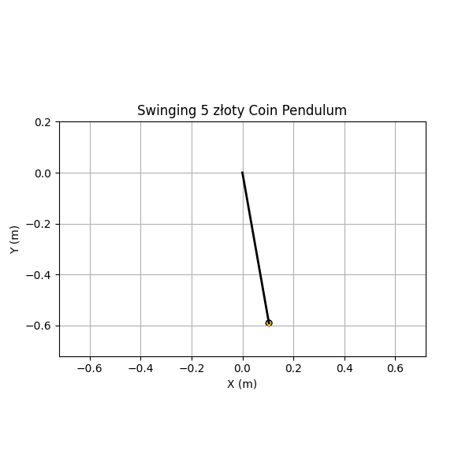

Measuring the Acceleration Due to Gravity Using a 5 złoty Coin Pendulum
Objective
To determine the acceleration due to gravity $$ g $$ using a simple pendulum made with a 5 złoty coin, and analyze the uncertainties involved in the experiment.
Materials
- String (length: approximately 60 cm)
- 5 złoty coin (mass ≈ 6.54 g, diameter ≈ 24 mm)
- Stopwatch (resolution: ±0.01 s)
- Measuring tape (resolution: ±0.001 m)
Procedure
1. Setup
A 5 złoty coin was tied securely to one end of a string and suspended from a fixed support. The pendulum length $$ L $$ was measured from the point of suspension to the center of the coin.
Length:
2. Data Collection
The pendulum was displaced by an angle less than $$ 15^\circ $$ and released. The time for 10 full oscillations was recorded using a stopwatch. This was repeated 10 times for accuracy.
Measurement Data
| Trial | Time for 10 Oscillations (s) |
|---|---|
| 1 | 15.53 |
| 2 | 15.48 |
| 3 | 15.52 |
| 4 | 15.54 |
| 5 | 15.50 |
| 6 | 15.47 |
| 7 | 15.51 |
| 8 | 15.49 |
| 9 | 15.55 |
| 10 | 15.52 |
Stopwatch resolution:
Calculations
1. Mean and Standard Deviation
Mean time for 10 oscillations:
Period:
Standard deviation:
Uncertainty in mean time:
2. Calculate $$ g $$
Pendulum formula:
Substituting:
3. Uncertainty in $$ g $$
Relative uncertainty:
Substituting:
Absolute uncertainty:
Final result:

Discussion
Comparison with Standard Value
- Standard value:
$$ g = 9.81 \, \text{m/s}^2 $$
- Measured value:
$$ g = 9.84 \pm 0.10 \, \text{m/s}^2 $$
✅ Well within uncertainty.
Sources of Uncertainty
1. Length Measurement
- Only one measurement was taken.
- The center of mass may not be precisely determined.
2. Timing Errors
- Human reaction time (~0.2 s) can bias stopwatch readings.
- Averaging 10 repetitions of 10 oscillations helps reduce random errors.
3. Small Angle Approximation
Small Angle Approximation
- Valid for \(\theta < 15^\circ\), which was satisfied.
- Larger angles would increase the period \(T\), slightly lowering \(g\).
4. Air Resistance
- Negligible due to small amplitude and short time scale.
Conclusion
The experiment yielded:
This agrees well with the accepted value of \(9.81 \, \text{m/s}^2\), demonstrating... the validity of the pendulum method and the importance of uncertainty analysis in physics experiments.